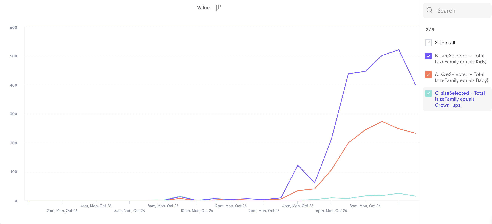

Size Filter | Primary
Crafted a simple size filter from scratch.
09/2020 - 10/2020
1 Designer (me)
2 engineers (Linsdey Jacks,
Mathieu Lue)
1 CXO (Cap Watkins)
UX Design
UI Design
User Testing
Figma
UserTesting
CSS
How it started
Primary is a kids clothing brand that makes essential, sustainable, and gender-neutral clothes in a rainbow of colors for babies and kids. On Primary, customers shop by “baby” and “kids” instead of “boys” and “girls”. Gender no longer limits what colors you can/can't wear. You can find navy blue stipe shirts for girls and light pink zip hoodies for boys.
To accommodate the growing color rainbow, Primary launched a one-of-a-kind color filter in 2019. Customers can filter by color family and even by color shade. However, a size filter wasn't in place and customers can only filter by age group instead of size. So in September 2020, we decided it was time to build a size filter to level up our shopping experience.
Goals
Building on top of the age group filter, we decided to add a second-level menu under each age group. That means introducing 7 size options for Baby, 10 for Kids, and 7 for Grown-ups. Each size option would be matched with multiple product sizes. So instead of seeing size 2, size 2-3, and size 3 for size options, customers would see size 2-3 when they use size filter.
When a size filter option is selected, available products that match the size will be listed in the result. The size filter will work in coordination with the color filter on the product list page (PLP). The size filter would not be multi-selectable in the first release but should be expandable for future upgrades.
Design iterations
Drawing inspiration
Since size filter is a very common element on online shopping websites and we weren't solving an unusual case, I started with collecting inspiration from other websites where there has a similar product structure. It was interesting to see how different websites treat the size filters differently and how their size filters coexist with other filters.
It may sound like stating the obvious, but an important thing I learned from these examples is that leaving gender filter and size filter on the same level may not be a good solution. It may lead your users to choose sizes first, and then realize they haven't selected their gender when seeing an item from a gender they are not shopping for. Then they had to go back to fix the problem, which could mean more scrolls on mobile. In our case, it will be age groups & sizes vs. gender & sizes, though.
Then I started to explore different ways to present the size filters. I identified two types of PLPs:
- 1) PLPs that only have one age group, like the baby PLP, and
- 2) PLPs that have more than one age group, like the Sales PLP, where there could be Baby, Kids, and Grown-ups products.
For type 1 PLPs, we only need to present sizes from one age group. The most straightforward way would be listing all sizes plainly. But considering the number of options an age group could contain, it might also make sense to keep the sizes in a dropdown menu.
For type 2 PLPs, I also came up with three directions: showing sizes under the age groups after an age group is selected; collapsing sizes in a 2-level dropdown menu; creating tabs for different age groups, and using the size filter to contain size options. I roughly sketched out the interfaces for these directions in Figma and shared them in design critique for feedback.
We identified two major issues with these early explorations. First, using a single-column or 3-column dropdown for showing sizes isn’t very effective. Second, the visual style of the dropdown menu should stay consistent across different types of PLPs. Besides, we also didn't feel strongly about including the number of available products for each size in the MVP version. So we decided to move on without it.
Simplifying
I incorporated the feedback and expanded the menu width so users can view more sizes in the same vertical space. I also experimented with different button styles for different states. I tried not to create new styles, that's how I got Style 1 where sizes are treated as round buttons. And in Style 3, the buttons are in the same style as sizes on the Product Detail Page (PDP). Style 2 is new but the buttons have the same shape and size as existing PDP size buttons.
Apparently, Style 1 won't work because there are size options that have more characters, like "12-18" for baby. There's no way to fit long text in a round button nicely. Between Style 2 and Style 3 we selected the former because it looks cleaner, and we felt it wasn't necessary to keep the button border for menu items.
Then I applied the style to type 2 PLPs. This time I focused on user interactions. After the age group is selected, what would users see? How do users switch to another age group? How do they clear the filter? I quickly prototyped out two solutions and seeing them side by side helped us criticize what works and what doesn't.


In version 1, it is convenient that you can select an age group directly on the page and switch between age groups easily. What doesn't work is pre-selecting "All" by default. In version 2, the interactions seem clumsy but using an arrow to indicate the open and closed state of the trigger is clever. So I solidified what I learned from these two and got round 3:

Not a solo dance
So far we’ve been putting our main focus on the size filter itself, but circling back to the main goals of this project, making sure the size filter works well with the color filter is also important.
I’ve been keeping the size filter side by side with the color filter based on an assumption that these two filters are equally important to users and the color filter should sit on the left because the rainbow is what makes our brand distinct. However, when I interacted with the color filter on the site, a problem came to notice:
Some color families, like the blues, could have a notably long list of shades that would exceed 1/2 of the screen width on desktop. This raised an issue for the positioning of the filters. If we place the size filter on the same row as the color filter, then there would be scenarios where we had to either hide or wrap part of the colors.
But none of that felt right to us. So we decided to move the size filter under the color filter so they won’t interfere with each other spatially.
To this point, we have felt pretty confident about both the interaction and the visual design. We wanted to test it out with several customers before handing it over to engineers. So I started preparing for user tests with actual users of our website.
Final inspections
In parallel with collecting customer feedback through user tests, the CXO, the engineers, and I had a meeting with the company founder where I presented the design to the group and we examined it for possible improvements.
Overall, we liked the solution because it provided a simple and user-friendly way to filter by size. The design looks on-brand and it plays well with the rest of PLP. However, the founders did think we can further simplify the filtering process on type 2 PLPs by displaying all sizes on the page instead of showing them in the dropdown menu. Another suggestion was to flip the color filter and the size filter for two reasons:
- 1) We knew that more customers would use the size filter more often, and
- 2) People would only buy products in their sizes and most of the time, they can be flexible with colors if they really like a product. If a customer filters by color first, and then discovers their size is not available, they might feel frustrated. We could reduce the chance of getting frustrated by flipping the order of these two filters.
I made those modifications and delivered the final version to our engineers. View it live
User Testing
The purpose of conducting user tests was to identify potential usability issues with the design and collect customer insights for future improvements. I only had a short period to collect data, so I decided to take advantage of UserTesting.com. This platform allowed us to set up a series of tasks and questions for our prototype. It will then send the test to selected participants by email and record the participant’s screen and audio feedback when they interact with the prototype.
I filtered out a list of customers who suggested an interest in size filtering in last year’s customer survey, then I further narrowed down the list by picking out “active customers” based on their purchase history. Then I reached out to potential participants through email and we finally were able to collect feedback from five eligible participants.
During the test, each participant was instructed to perform a series of tasks using the prototype. They were asked to think aloud while performing tasks. Before tasks started, they were asked their first impressions of the design. After each task, they rated the difficulty of the task and were asked why they felt that way. After the tasks, they were asked their perceived usefulness of the size filter, their overall feeling about the design, and suggestions on how size filter could be more helpful for their shopping experience.
After we collected all the recordings from participants, I replayed and transcripted them. Then I synthesized their responses and abstracted key findings:
- 1) Participants’ first impressions about the size filter design were very positive. Most commonly used words included “user-friendly” “easy” “clear” and “handy”.
- 2) No errors were observed when they performed tasks using the prototype. All participants rated “very easy” when asked how difficult it was to complete the task for all tasks.
- 3) Participants found the size filter super helpful. Many participants mentioned their experience where there wasn’t a size filter on the site and they were upset to find the size they shop for is not available when they open the PDP.
- 4) For improvements, one participant mentioned she would love to be able to choose one more size. “... so you can choose like size 7, and 8, and 9 for kids. It would be nice to be able to filter all three other sizes for this year and next year sizes.”
To sum up, we were happy to learn our customers found this design helpful and easy to use. We were expecting to add a multi-selecting function for size filters when we have the bandwidth.
Release!
The size filter was released at the end of October, right before Halloween. We ramped all users in a day. Nothing is more fulfilling than watching the lines in the graph climb up on your release day!
Reflections
It is always fun to watch back when you are standing at the end of the road. I was surprised by how close I was to the final solution in each step of the process and I frequently asked myself "what was I thinking? That design obviously doesn't work!"
I think the biggest obstacle I had was setting the limitation or rule that shouldn't exist by myself. I thought we should keep the four options (All, Baby, Kids, Grown-ups) on type 2 PLPs, and that assumption restricted my ability to reach further for a simple solution. It also made me spend a lot of time thinking about how an "All" menu would look like and behave, which turned out to be a problem not worth solving. It is important to analyze the existing solution and know what needs to be followed and what needs to be broken.
Another takeaway is that products are different, and the examples you find from other products are just examples. They can be good, they can be fabulous, but they don't necessarily apply to the product you are building. I don't recall seeing options in a size filter not collapsed in a menu elsewhere, but because we don't have too many sizes in each age group and we don't have multiple filters, such a solution works well.